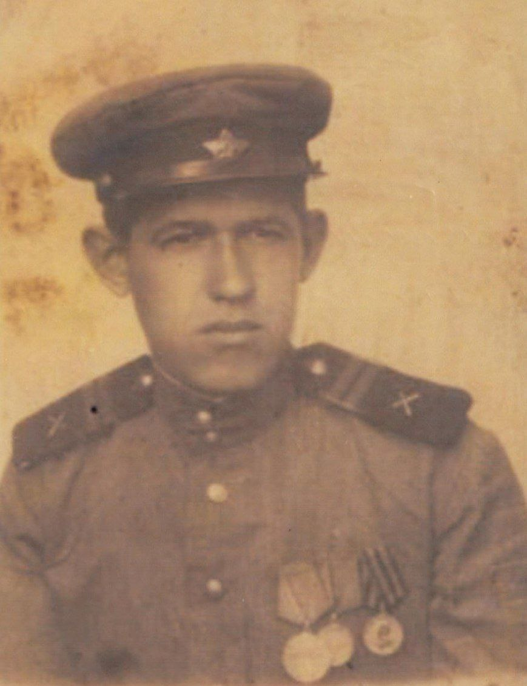

Наш прадедушка, Кокоулин Петр Александрович, родился 1925 году в Костромской области Боговаровский район Покровский сельского совета. Был призван на войну в 1943 год, Вохомским РВК, Вологодской области ему было 18 лет.
Мой прадедушка был связистом. В наградных листах он описывается смелым, находчивым и решительным. При артиллерийском обстреле наших позиций часто рвалась телефонная связь Товарищ Кокоулин под сильным артиллерийско-минометным огнем своевременно исправлял порывы связи, чем обеспечивал своевременное открытие огня нашими батареями и пехота продвигалась вперед. 23 июня 1944 года им было устранено под огнем противника 19 порывов связи.
Закончил войну в звании младший сержант, награжден медалями: Медаль «За боевые заслуги», Медаль «За отвагу», Медаль «За победу над Германией в Великой Отечественной войне 1941–1945 гг.»
К сожалению прадед умер рано в 1977. О войне он почти не рассказывал. В семьях тогда не любили рассказывать о том, что они пережили. Но с бабушкой, по рассказам моего папы, они иногда перекладывали его награды, она их хранила у себя в шкафу в коробочке. После войны прадедушка немало сделал для восстановления жизни на своей родине с. Боговарово Костромской области. Он работал председателем и вкладывал в свою работу все свою душу.